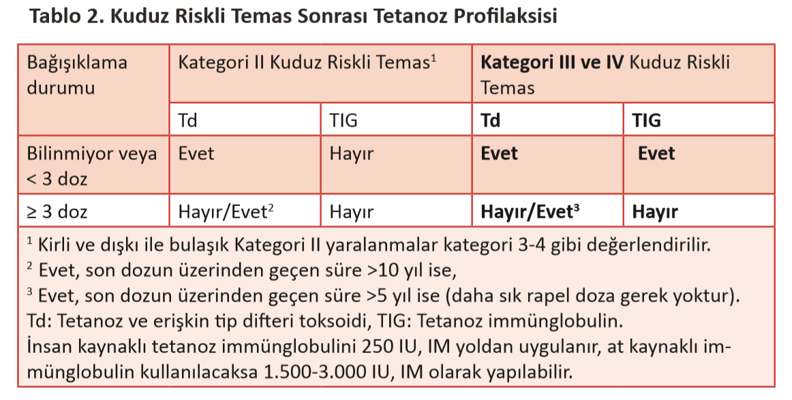

**
*
Başlangıç
Aşı >> Kuduz aşısı
Ig>>> Kuduz Immunglobulini
...
* Aksi belirtilmedikçe terimler kuduz profilaksisi ile ilgilidr.
Menüdeki tarihler 0. 3. 7. günlerde 1'er doz ve 14. - 28. günler arasında 1 doz - toplam 4 doz - şeklinde uygulanan aşı şemasının bugünden başlayan gg.aa şeklindeki tarihleridir.
Temas Sonrası Yaklaşım
- Yara bakımı
- Antibiyotik profilaksisi
- Tetanoz profilaksisi
- Kuduz
aşısı
uygulaması
- Kuduz immünglobulin uygulaması
Yara Bakımı
Kuduz riskli temas profilaksisinde en önemli adım yara bakımıdır. İyi bir yara bakımı,
kuduz
virüsü
geçişini azaltmadaki en etkili yöntemdir. Mümkün olan en kısa sürede yapılmalıdır. Tüm
yaralanmalarda yara yeri derhal bol akarsu (basınçlı su veya hortum ucunun sıkılarak
mümkün
olduğu
kadar jet akımın sağlanması şeklinde) ve sabunla iyice yıkanmalıdır. Sağlık
merkezlerinde
büyük
boy
enjektör ile serum fizyolojik kullanarak da yıkama işlemi yapılabilir.
- Virüs uzun süre ısırık bölgesinde kalabileceği için aradan geçen süreye
bakılmaksızın
yıkama
işlemi mutlaka uygulanmalıdır.
- Yıkama işlemi bittikten sonra alkol veya iyotlu antiseptiklerden biri
kullanılmalıdır.
- Mekanik olarak virüsün mümkün olduğu kadar uzaklaştırılması amaçlandığından,
sadece
antiseptik uygulama, bol su ve sabun ile yıkamanın yerini alamaz.
- Mümkün olduğu kadar dikiş ve benzeri girişim yapılmaması tercih edilir. Derin ve
geniş
yaralanmalarda kozmetik faktörler ve enfeksiyon riski değerlendirilmelidir. Kuduz
profilaksisi
yanı
sıra dikiş de gerekiyorsa, virüsün sinir içine inokülasyon riskini en aza indirmek için
kişinin
klinik durumu uygun ise, yara çevresine ve içine kuduz immünglobulini yapıldıktan 2 saat
sonra
ve
mümkün olduğunca az sayıda dikiş atılabilir. Yara bakımı yapan sağlık personeli müdahale
esnasında
standart enfeksiyon kontrol önlemlerini almalıdır.
Antibiyotik Profilaksisi
Tüm insan ısırıklarında antibiyotik profilaksisi verilmelidir. Hayvan ısırmalarında ise aşağıdaki durumlarda antibiyotik profilaksisi verilmelidir;
- Yüzden ısırılmalar
- Elden ısırılmalar
- Kemik ve eklem penatrasyonu olasılığı olan ısırılmalar
- Protez ekleme yakın yaralar
- İmmünyetmezlikli kişiler (splenektomi ve diabet dahil)
- Genital bölge yaralanmaları
- Derin delinme yaraları (özellikle kedilerle olan)
- Kapatma gerektiren yaralar
Diğer yaralanmalarda ödem ve ezilme varlığında başvuru ilk sekiz saat içinde ise klinik bulgular olmasa bile antibiyotik profilaksisi uygulanır.
İlk sekiz saatten sonraki başvurularda klinik olarak enfeksiyon düşündüren bulgu yoksa antibiyotik vermeye gerek yoktur.
Profilakside tercih edilecek antibiyotikler:
Erişkinlerde:
Amoksisilin-klavulanat (875-125 mg, 2x1 po veya 500-125 mg, 3x1po)
Penisilin alerjisi varlığında;
• Klindamisin (300 mg, 4x1 po) + Trimetoprim/sulfametoksazol forte tablet (2x2 po)
• Doksisiklin (100 mg, 2x1 po) + metronidazol (500 mg, 3x1) ya da klindamisin (300mg-450 mg, 3x1)
• Gebelerde, penisilin alerjisinde klindamisin tercih edilmelidir. Makrolidler (Azitromisin 500 mg, 1x1 po, Klaritromisin 500 mg, 2x1 po) de kullanılabilir.
Çocuklarda:
Amoksisilin-klavulanat (45-100 mg/kg/gün, 2-3 doza bölünerek po)Alternatif tedaviler;
o Doksisiklin (8 yaşından büyüklerde, 2-4 mg/kg/gün, 2 doza bölünerek po)
o Sefuroksim (10 mg/kg/gün, 2 doza bölünerek po) + metronidazol (30 mg/ kg/gün, 3 doza bölünerek po)
o Penisilin alerjisinde Klaritromisin (15 mg/kg/gün, 2 doza bölünerek po)
Azitromisin (10 mg/kg/gün, tek dozda po)
Kuduz Aşı Uygulaması
Aşı erişkinlerde deltoid bölgeye, küçük çocuklarda uyluğun anterolateral
bölgesine kas içine uygulanır.
Gluteal bölgeye aşı enjeksiyonu, yeterli antikor yanıtı oluşturmadığı için
yapılmamalıdır.
4 Dozluk Aşı Şeması: 0., 3., 7. günlerde birer doz ve 14 ile 28. günler arasında
dördüncü doz olmak üzere toplam dört doz uygulanır.
2.1.1. Aşı Şeması: 0. gün 2 doz, 7. ve 21. günlerde birer doz olmak üzere toplam
dört doz olarak uygulanır.
Belirtilen aşı şemaları sağlıklı bireylerde Tablo 3’te, immün sistemi
baskılanmış bireylerde ise Tablo 4’te önerilen yaklaşımlara göre seçilir.
2.1.1 aşı şemasında 0. günde yapılan iki doz aşının her bir dozu farklı ekstremiteye
uygulanmalıdır.
Aynı anatomik bölgeye birden fazla aşı uygulanacaksa, uygulama yerleri
arasında en az 2 cm. uzaklık bulunmalıdır
Bir veya birkaç doz aşı yapıldıktan sonra, aşıya ara vererek yeniden
başvuranlarda aşılama şemasına kalınan yerden devam edilir.
Bebek, çocuk, erişkin ve gebelerde kuduz bağışıklaması aynı şema ve dozlarla
uygulanır.
Kuduz riskli temas sonrası aşılaması devam eden hastanın bu sırada yeni bir
riskli teması olmuşsa aşılama şeması aynı şekilde sürdürülür.
İkinci temasta immünglobulin endikasyonu varsa ilk doz aşıyı takip eden yedi
gün içinde immünglobulin yapılır. Süre 7 günü geçmiş ise immünglobulin
yapılmamalıdır.
Aşılama sırasında viral ve bakteriyel enfeksiyon saptanan hastalar uygun
şekilde tedavi edilir ve aşılama sürdürülür. Kullanılan ilaçlara devam edilir.
İmmünglobülin Uygulaması
Heterolog (at kaynaklı) olanlarda 40 IU/kg, insan kaynaklı olanlar için 20
IU/kg olarak yapılmalıdır. Dozun artırılmasının hiçbir yararı yoktur ve hatta antikor
yanıtını baskılayabilir.
İmmünglobülinin tamamı, anatomik olarak uygun ise
yara çevresine ve yara içine yapılmalı, anatomik olarak uygun değilse bir kısmı
kompartman sendromu dikkate alınarak yara çevresine ve yara içine yapılmalı,
geri kalanı sistemik olarak IM yolla (gluteal bölgeye yapılmamalıdır, öncelikle
deltoid veya bacak anterolateral bölgesine) yapılmalıdır.
Eğer önerilen doz
miktarı tüm yaraya uygulamak için yetersiz kalıyorsa steril serum fizyolojik ile
yaranın büyüklüğüne göre yeteri kadar sulandırılarak yara içine ve çevresine
uygulanmalıdır.
İmmünglobülin asla aşıyla aynı enjektörle ve
İmmünglobülin asla aşıyla aynı anatomik bölgeye yapılmaz
At kaynaklı immünglobulin uygulamalarında hipersensitivite reaksiyonları
sık görülmemektedir. Yapılan çalışmalarda, oluşabilecek hipersensitivite
reaksiyonlarını değerlendirmek amacıyla immünglobulin uygulamasından önce
yapılan deri testinin duyarlılığı ve özgüllüğü düşük bulunmuştur. Ayrıca DSÖ
tarafından da test önerilmemektedir. Bu nedenle daha önceki alerjik reaksiyon
öyküsü gibi özel durumlar hariç deri testine gerek yoktur. Ancak her türlü
enjeksiyonda olduğu gibi, kuduz aşısı ve immünglobulin uygulaması sırasında
nadir görülebilen olası alerjik reaksiyonlar için müdahale koşulları mutlaka hazır
olmalıdır.
İmmünglobulin uygulamalarında anafilaktik reaksiyon riski için adrenalin/
epinefrin hazır bulundurulmalıdır. Erişkin için 1/1000 solüsyondan (1mg/1mL)
maksimum 0.5 mg İM uygulanır. Çocuk için ise maksimum 0.3 mg (0.01 mg/kg)
bacağın orta anterolateral bölgesine İM yapılır. Gerekirse 5-15 dakika ara ile doz
tekrarlanabilir. Genellikle birinci ve ikinci dozdan sonra yanıt alınır. Ayrıca oksijen
6-8 L/dk verilmeli, hasta damar yolu açılarak %0.9 izotonik solüsyon verilmeli ve
takip edilebileceği bir merkeze acil olarak sevk edilmelidir.
İmmünglobülin yapılırken özellikle küçük yaralarda kompartman sendromu
gelişmesi konusunda dikkatli olunmalıdır
Tetanoz Profilaksisi
Tüm hastalar tetanoz profilaksisi yönünden değerlendirilmelidir. Yaralanma sonrasında yara bakımı ile birlikte tetanoz profilaksi yaklaşımı Tablo 2’de önerildiği gibi yapılmalıdır. Profilakside gerektiğinde tetanoz immünglobulini kullanılır. İnsan kaynaklı tetanoz immünglobulini 250 IU, IM yoldan uygulanır, at kaynaklı immünglobulin kullanılacaksa 1500-3000 IU, IM olarak yapılabilir.
Geliştirici Notu
Profilaksi Belirsizliği
Sağlık Bakanlığı’nın Kuduz Profilaksi Rehberi(2019) sayfa 15’te geçen,
“Son 6 (altı) ay içinde tam doz kuduz temas sonrası profilaksi uygulanmış kişilerde
profilaksi gerekmez. Yüz bölgesinden yaralanma ve bağışıklığı baskılanmış kişilerde süreye
bakılmaksızın profilaksi uygulanır.”
ifadesinin değişmesi gerektiğini düşünüyorum.
Çünkü,
“profilaksi uygulanır” denmekte ama nasıl bir profilaksi uygulanacağı belirtilmiyor: 2 doz
aşı? 4 doz aşı, +Ig... ?
Yüz bölgesinden yaralanma ve bağışıklığı baskılanmış
ifadesi
“hem bağışıklığı baskılanmış hem de yüz bölgesinden yaralanmış” anlamında ise;
“yüz bölgesi” ifadesi gereksiz,
çünkü “bağışıklığı baskılanmış” kişilerde zaten “IG + AŞI (4 veya 5 doz )”ı tedavisi
öneriliyor.
“bağışıklığı baskılanmış kişi VEYA yüz bölgesinden yaralanmış kişi” anlamında ise;
“yüz bölgesinden yaralanmış kişi” ve “bağışıklığı baskılanmış kişi” aynı kategoride
değerlendirilerek kitabın geri kalanı ile çelişki oluşturuyor.
Çünkü; “bağışıklığı baskılanmış kişi”de kesinlikle “IG + AŞI (4 veya 5 doz )” önerilirken,
yüz(diğer kısımlarda baş-boyun ifadeleri yer alıyor, yüz için ek bilgi yok) yaralanmalarında
ise
“hiç kuduz profilaksisi uygulanmaması”([hayvan aşılı + gözlem sonucu sağlıklı] ise ) dahil
olmak üzere farklı yaklaşımlar öneriliyor.
O yüzden bu ifadeyi yok sayıp
immünyetmezlik durumunda direkt olarak [IG + AŞI] önerilirken,
baş-boyun-(yüz) yaralarında ise, yara Kategori 3 yaralanma olarak kabul edilerek
ilerlenecektir.
Tetanoz Aşısı
Rehberde tetanoz profilaksisi açısından vakalar 2 gruba ayrılmış: 1. Kategori 2 2. Kategori 3 ve 4 Dahas sonra ise 1. grubun bazıları da 2. gruba dahil edilmiş. Yani ilk grupta pek kimse kalmamış. Bu durumda; önceden 3 doz aşısı olmamış kişilere Td + TIg (Td 3 doza tamamlanması önerilir); 3 doz aşısı olan ve son dozun üzerinden 5 yıl geçenlere Td yapılması. 3 doz aşısı olan ve son dozu 5 yıl içinde olanlara ise tetanoz profilaksisi yapılmamsı doğru uygulama gibi duruyor.
Sorumluluk Reddi
Bu sayfa eğitim ve eğlence amaçlıdır. Bu sayfadaki bilgiler Sağlık Bakanlığı Kuduz Rehberi baz alınarak hazırlanmışsa da bilgilerin doğruluğu garanti edilmemektedir. Tıbbı bilgi ve görüş niteliğinde değerlendirilmemelidir. Sağlık ile ilgili konularda doktorunuza ve resmi kaynaklara başvurunuz.